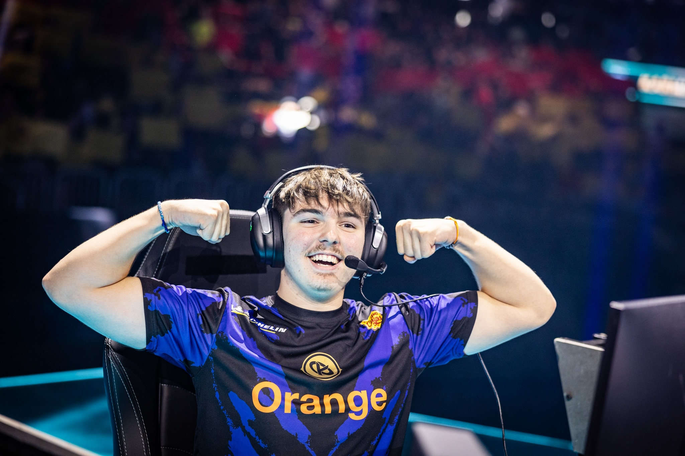

Vatira
Axel "Vatira" Touret (né le 14 Mai, 2006) est un joueur Rocket league Français.
| Années | Ses équipes | Ses trophées |
|---|---|---|
| 2021/07/07 - 2021/09/24 | Magnolia | EURAT July Showdown Alienware Tournament Series - Season 2: Europe - Qualifier 1 Alienware Tournament Series - Season 2: Europe |
| 2021/09/24 - 2022/04/27 | Team Queso | Mountain Masters V2 Occitanie Esports 2021 Monaco Gaming Show 2021 - Qualifier 4 RLCS 2021-22 - Winter: EU Regional Event 1 - Apollo Open RLCS 2021-22 - Winter: EU Regional Event 3 - Copa de Rocket League |
| 2022/05/05 - 2022/09/08 | Moist Esport | RLCS 2021-22 - Spring: EU Regional Event 3 - Super 16 RLCS 2021-22 - Spring Split Major |
| 2022/10/02 - Aujourd'hui | Karmine corp | RLCS 2022-23 - Fall: EU Regional 2 - Fall Cup RLCS 2022-23 - Winter: EU Regional 1 - Winter Open D7 Showmatch: Mawkzy vs Vatira RLCS 2022-23 - Winter: EU Regional 2 - Winter Cup JohnnyBoi_i Showmatch: Dark vs Vatira RLCS 2022-23 - Winter Split Major Urban Series 5 Olympic Esports Week Showmatch: Gen.G Mobil1 Racing vs. Karmine Corp Flip & Spin - Finals Samsung Gaming Hub Challenge RLCS 2024 - Major 1: EU Open Qualifier 1 RLCS 2024 - Major 1: EU Open Qualifier 2 RLCS 2024 - Major 1: EU Open Qualifier 3 |
| 3 années | 4 équipes | 23 trophées |